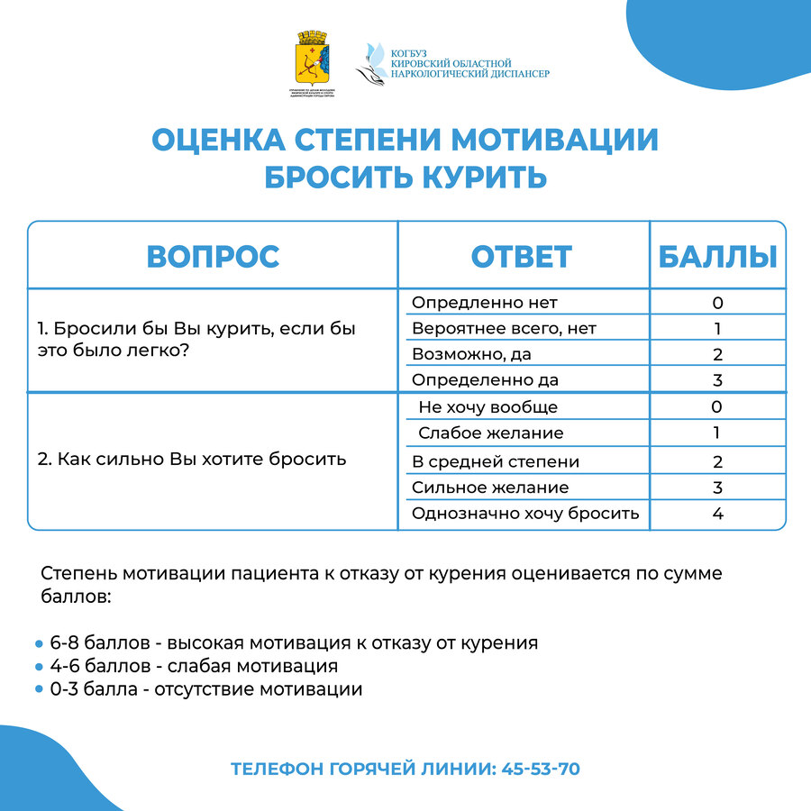

МБУ "Спортивная Школа №2"
| |||||||||
| Слабовидящим Обычный |
Новости 2022-21 (Перейти к новостям 2019 или 2018 года)
С 17 по 28 октября 2022 года в Кировской области проводится второй этап Общероссийской акции «Сообщи, где торгуют смертью».
Она направлена на привлечение общественности к участию в противодействии незаконному обороту наркотиков, оказание квалифицированной помощи и консультаций по вопросам лечения и реабилитации наркозависимых лиц. Первый этап акции проходил с 14 по 25 марта 2022 года. Акция проводится УМВД России по Кировской области, органами исполнительной власти Кировской области, муниципальными образованиями области, КОГБУЗ «Кировский областной наркологический диспансер». Каждый житель области может внести вклад в борьбу с наркоманией.
О фактах незаконного оборота наркотиков сообщите информацию по телефонам: 02 (с мобильных телефонов: 102), (8332) 588-368, телефону доверия: 589-777 (телефоны круглосуточные).
Поступившие сообщения будут незамедлительно проверены для оперативного пресечения преступлений и правонарушений, привлечения виновных к ответственности.
Кроме этого, организована консультативная помощь от квалифицированных специалистов КОГБУЗ «Кировский областной наркологический диспансер» по телефону «горячей линии»: 8 (8332)45-53-70.

Каждый потребитель табачной и никотинсодержащей продукции хотя бы раз в жизни задавался вопросом: "Как бросить курить?"
Важнейшим вопросом является скорее не как бросить курить раз и навсегда, а готов ли я к этому?
- Готов ли изменить жизнь, отказавшись от сигареты?
- Готов ли обрести новые привычки взамен старых?
- Готов ли изменить круг общения (иногда требуется и это!) или сделать отношения в привычном круге друзей иными?
Если вы искренне ответите положительно на эти вопросы, можно приступать к работе над собой.
При "слабой мотивации" и "отсутствии мотивации" - Вам необходимо обратиться за помощью не только наркологической,
но и психологической (с целью усиления и поддержания мотивации к отказу от табака).
По вопросам отказа от курения, в том числе анонимно, вы можете обратиться к врачу-наркологу КОГБУЗ
«Кировский областной наркологический диспансер» (г. Киров, Студенческий проезд, 7).
Запись по телефону: Для взрослого населения: (8332) 53-66-62 (в рабочее время).
Для детского и подросткового населения: (8332) 53-00-97 (в рабочее время).
Посетите сайт, чтобы получить консультацию по отказу от курения: https://kirov-ond.ru
Телефон горячей линии: (8332) 45-53-70 (КРУГЛОСУТОЧНО, АНОНИМНО).

Сборная Кировской области на зональном этапе Первенства России по волейболу среди юношей 2006-2007 г.р.
В Нижнем Новгороде с 7 по 12 ноября 2020 года проходит зональный этап Первенства России по волейболу среди юношей 2006-2007 г.р. Кировскую область под руководством тренера МБУ СШ №2 Медведева Андрея Николаевича и тренера ДЮСШ г. Белая Холуница Зуевой Юлии Алексеевны представляет сборная команда из воспитанников СШ №2, ДЮСШ г. Белая Холуница, ДЮСШ с. Бурмакино и КОГОБУ ДО "Дворец творчества Мемориал" - Исток.
Всего в зональном этапе принимают участие 6 команд: Нижегородская область, Пермский край, Удмуртская республика,
Самарская облать, Республика Башкорстостан и Кировская область.
Желаем спортсменам удачи в выступлении на соревнованиях!
День солидарности в борьбе с терроризмом 2020: история и традиции
Терроризм — жестокое преступление. В нашей стране ежегодно отмечается день консолидации государства и общества против действий террористов — День солидарности в борьбе с терроризмом. В 2020 году памятная дата выпадает на четверг
Когда отмечается
Каждый год 3 сентября в нашей стране отмечается День солидарности в борьбе с терроризмом. В 2020 году в России мероприятия, приуроченные к памятной дате, пройдут в 16-й раз.
История
Существуют разные версии о времени возникновения терроризма. Одни эксперты утверждают, что о первых террористических актах стало известно еще в античности, другие — что это современное явление. Разночтения происходят из-за вопроса о том, можно ли описывать действия, совершенные в глубоком прошлом, в современных понятиях, а также из-за трудностей в определении терроризма.
Согласно Федеральному закону от 6 марта 2006 г. N 35-ФЗ "О противодействии терроризму" под последним следует понимать "идеологию насилия и практику воздействия на принятие решения органами государственной власти, органами местного самоуправления или международными организациями, связанными с устрашением населения и (или) иными формами противоправных насильственных действий".
В Российской империи произошло несколько десятков преступлений, которые сегодня можно квалифицировать как террористические акты. Речь идет, как правило, о "революционном терроризме" - к нему относят убийства и покушения на высокопоставленных лиц государства радикальными активистами. В СССР и современной России в общей сложности произошло несколько сотен терактов, и мотивы бандитов стали гораздо сложнее - здесь замешаны ксенофобия, месть, обострение социальных проблем и т.д. Среди всех террористических актов выделяется беспрецедентный по своей жестокости и бесчеловечности теракт в Беслане, произошедший в 2004 году.
1 сентября во время праздничной линейки в честь Дня знаний на школу №1 в Беслане напали террористы. На линейке в тот момент находилось более 1000 человек — всех их бандиты загнали внутрь школы и удерживали там почти три дня. Пленники находились в ужасных условиях — им не давали пить, есть, удовлетворять минимальные естественные потребности. Здание школы, где удерживали заложников, было заминировано. События развивались в течение трех дней; 3 сентября произошел штурм здания, в ходе которого было убито несколько десятков сотрудников российских спецподразделений, участвовавших в операции. В результате теракта погибло 333 человека, из которых 186 — дети в возрасте от 1 до 17 лет.
Теракт в Беслане стал одним из самых масштабных и самых бесчеловечных в новейшей истории России. Именно в память о жертвах Беслана в России федеральным законом "О внесении изменений в Федеральный закон "О днях воинской славы (победных днях) России" от 21 июля 2005 года был учрежден День солидарности в борьбе с терроризмом.
Теракт повлек за собой ряд других важных социальных и политических последствий. После событий 2004 года по всей стране были усилены меры безопасности в местах массовых скоплений людей — стадионах, вокзалах, метро; особое внимание уделялось школам, вузам и другим образовательным учреждениям. Президентом были отменены губернаторские выборы — их место заняла централизованная система назначения. Были созданы такие важные организации, как Национальный антитеррористический комитет, Общественная палата Российской Федерации, Комиссия по вопросам улучшения социально-экономического положения в Южном федеральном округе.
Противодействие терроризму
Сегодня государство применяет различные меры, направленные на борьбу с терроризмом: это меры по предотвращению, борьбе и ликвидации последствий террористических актов.
Государственная организация, ответственная за предотвращение терактов в нашей стране, — Национальный антитеррористический комитет. Его деятельность приносит свои плоды: за один только 2017 год предотвращено 68 планируемых преступлений, а с 2010 года общее количество терактов в России сократилось в 10 раз.
Международный день борьбы с наркоманией и незаконным оборотом наркотиков
26 июня отмечается праздник, имеющий всемирное значение. Это — Международный день борьбы с наркоманией и незаконным оборотом наркотиков. Он был учрежден в 1987 году как выражение решимости Генеральной Ассамблеи ООН усилить свою деятельность и создать мировое общество, свободное от злоупотребления наркотиками. Основанием для такого решения стали рекомендации Международной конференции по борьбе со злоупотреблением наркотическими средствами и их незаконным оборотом, принявшей обширный план деятельности по борьбе с наркотической зависимостью.
В 1998 году состоялась специальная сессия Генеральной Ассамблеи ООН, поставившая цель значительно уменьшить такое пагубное явление в мире, как наркомания, уже к 2008 году. Но ООН обнародовала цифры, свидетельствующие, что в настоящее время в мире наркотики употребляют более 185 млн. человек. Это составляет 3% всего человечества и 12% людей возрастом от 15 до 30 лет. С каждым днем последствия наркотической зависимости становятся все более угрожающими в демографическом плане. Наркотики овладевают несовершеннолетними и подростками, увеличивается количество женщин, употребляющих наркотические препараты.
Наркологи особенно обеспокоены этой проблемой, так как имеют данные о том, что еще 3 года назад средний возраст наркоманов был 16-17 лет, а теперь он снизился до 13-14 лет. За последнее десятилетие число женщин, принимающих наркотические и психотропные препараты, увеличилось в семь раз!
Наркоманию без преувеличения можно назвать самым страшным явлением нашего века. В ее коварные сети с каждым днем попадает все больше людей, пытающихся убежать от проблем и стрессов. Но цена такого «побега» оказывается слишком высокой, и результаты эксперимента над собой большей частью оказываются необратимыми. Даже специальный курс лечения от наркомании не всегда способен освободить человека от этой зависимости. После нескольких лет без наркотиков у бывшего наркомана зачастую возникает рецидив. И те ощущения, которые казались спасением от реальных проблем и неудач, становятся бесконечным кошмаром и абсолютной пустотой. Поэтому изначально выбирать наркотики как средство для ухода от жизненных проблем – непростительное и губительное решение для каждого человека.
К общему сожалению, наркомания в наше время – невероятно прибыльный бизнес. Возможностью поживиться на чужом горе не брезгуют многочисленные наркодиллеры. Известно, что наркоторговля сосредоточена в Азии, странах Ближнего и Среднего Востока, в Латинской Америке. Поставщиком героина в мировых масштабах является Афганистан.
После распада СССР уровень наркотической преступности в России и странах ближнего зарубежья значительно возрос. Как свидетельствуют данные Федеральной службы России по контролю за оборотом наркотических средств и психотропных веществ, число наркозависимых в России за последнее десятилетие увеличилось в 9 раз. Наркотики ежедневно употребляют 4-5 млн. россиян, из них – около 2 млн. составляют дети и молодежь возрастом 11-24 лет. Это лишь официальные данные, на самом деле число наркоманов в стране намного выше. По сведениям некоторых экспертов в этой области в России 10 млн. наркозависимых людей. 25% всех преступлений в стране, так или иначе, связаны с наркоманией.
Как уберечь ребенка от наркотиков?
‼ВНИМАНИЕ. На основании Приказа начальника управления по делам молодёжи, физической культуре и спорту от 17.03.2020 № 69 "Об обеспечении
санитарно-эпидемиологического благополучия в подведомственных учреждениях", тренировочный процесс в МБУ СШ №2 ПРИОСТАНОВЛЕН с 17.03.2020 до особого распоряжения!!!!
14-15 марта 2020 г
С 14-15 марта в залах спортивного комплекса «Динамо» (ул. Московская, 1-Б) и «Кировского многопрофильного техникума» (ул. Уральская,7) состоится ХХХ областная спартакиада учащихся (3 этап) Кировской области по волейболу среди юношей 2002 г.р. и младше.
Планируется выступление 12 команд. Спортивная школа будет представлена спортсменами Октябрьского и Первомайского района.
С 13-15 марта среди девушек 2002 г.р. и моложе состоится ХХХ областная спартакиада учащихся (3 этап) Кировской области по волейболу в п.г.т. Верхошижемье. Планируется выступление 6 команд.
Команда СШ №2 будет представлена спортсменами Октябрьского района.
04-11 марта 2020 г
С 4-6 марта в г. Бор Нижегородской области состоялся всероссийский турнир по волейболу среди девушек 2007-2008 г.г.р. Среди 15 команд Нижнего Новгорода , Ростова, Воронежа, Москвы, Санкт-Петербурга, Глазова команда спортивной школы № 2 г. Кирова участвовала в борьбе, где половина состава команд, участницы полуфинала первенства России.
Игры проходили по круговой системе. Команда СШ №2 г. Кирова на групповом этапе заняла 2 место, уступив Череповцу и выиграв у Тулы, Ростова и Н.Новгорода. Далее первые три команды каждой группы разыгрывали места с 1 по 9, остальные с 10 по 15. В результате сыгранных 8 игр, 4 выиграли, 4 проиграли, в итоге заняли 8 место из 15 команд. Впереди остались команды будущего полуфинала первенства России.
Автор текста - Следникова Е.Л.
26 февраля -04 марта 2020 г
29 февраля по 01 марта прошли XIX традиционные соревнования по легкой атлетике "Мемориал Заслуженного тренера СССР и России Нивина А.И." Впервые они проводились в манеже «Вересники» и получили статус межрегиональных. На этих соревнованиях приняли участие 350 спортсменов Кировской области и регионов России. Легкоатлеты боролись на беговых дистанциях 60, 200, 400, 800, 1500 и 3000 метров. Порядка ста спортсменов СШ №2 с успехом выступили в данном старте.
Среди девушек младшего возраста Охапкина Анастасия на дистанции 60 метров заняла первое место – 8,44 секунды. Вараксин Иван с результатом 7,90 секунды пришел к финишу первым на аналогичном отрезке. Не было равных Бастраковой Валерии в беге на 800 метров-2 минуты 44,22 секунды.
В среднем возрасте у девушек Петрова Анастасия отметилась дублем вторых мест, финишировав в беге на 200 метров за 27,13 секунды, а на дистанции 60 метров за 8,22 секунды. Курочкина Анастасия на дистанции в два круга выиграла золото, затратив 1 минуту 02,02 секунды. У юношей в спринте Жигалов Алексей отличился двумя выигрышами: в беге на 200 и 400 метров, финишировав за 24,18 секунды и за 53,80 секунды соответственно.
В старшем возрасте Носков Никита выиграл 1500 метров- 4 минуты 20,08 секунды и вторым завершил дистанцию 800 метров-2 минуты 04, 74 секунды.
У девушек юниорок Следникова Надежда выиграла серебро на спринтерской дистанции-8,43 секунды и бронзу на дистанции 200 метров-28,20 секунды. Валеев Ярослав стал вторым на 800 метрах-2 минуты 00,38 секунды.
Среди женщин серебром отметилась Перминова Виктория, пробежав 200 метров за 27,01 секунды.
29 февраля волейболисты спортивной школы №2 участвовали в фестивале «Еще один день волейбола». Соревнования проходили в спортивных залах МБУ СШ №2 среди юношей и девушек в возрастных категориях от 10-18 лет. Активное участие приняли 18 команд из школ № 40, 56 ,30, 42, Лин Тех №28 и СШ №2. По итогам проведенных игр в возрастной категории до 12 лет команда юношей СШ №2 2009 г.р выиграли турнир, команда 2010 г.р. заняли третье место. Команда девушек СШ №2 2008 и 2005 г.г.р. выиграли золото турнира, команда волейболисток 2007 г.р., проиграв 3 очка стали вторыми.


Автор текста - Следникова Е.Л.
19-26 февраля 2020 г
С 19-21 февраля состоялось первенство Кировской области по волейболу среди юношей 2002-2005 г.г.р. Игры проводились в пяти спортивных залах (Дворец творчества- Мемориал, Газпром, Спортивная школа №2, СОШ № 42, СОШ №8). В первый день играли 6 групп по три команды в круг. Во второй день группы формировались из первых и вторых мест разных групп. Таким образом в финал вышли победители групп второго дня. В третий день разыграли полуфинал и финальные игры за призовые места. По итогам проведенных игр спортсмены СШ №2 из 18 команд спортивных и общеобразовательных школ выиграли бронзу и почетное третье место, впереди на первой позиции - команда ВТЛ, на второй - волейболисты из Нижнеивкино.
Награждение проводил президент федерации Кировской области по волейболу Мухин А.А.
Автор текста - Следникова Е.Л.
08-09 февраля 2020 г
В минувшие выходные в городе Кирове проходил открытый Чемпионат города по легкой атлетике в помещении манежа «Вересники». Порядка 150 спортсменов состязались за звание лучших в классических видах зимней соревновательной программы. Легкоатлеты СШ №2 в количестве 48 спортсменов составили достойную конкуренцию.
В барьерном спринте не было равных Токаревой Юлии, ей понадобилось 10,32 секунды на преодоление этой дистанции и в прыжках в высоту, взяв 1 метр 35 сантиметров, Юлия вновь была недосягаема соперникам. У мужчин на 800 метровой дистанции третью позицию занял Валеев Ярослав–2 минуты 00,56 секунды. В прыжках в длину у женщин второе место заняла Ложкина Елена, тройку лидеров замкнула Рыбакова Жанна, обе спортсменки показали результат 4 метра 63 сантиметра. В толкании ядра верхняя ступень пьедестала принадлежала Козловой Евгении-10 метров 19 сантиметров.
Автор текста - Следникова Е.Л.
03-06 февраля 2020 г.
С 3-6 февраля в г. Сыктывкар прошли межрегиональные соревнования по волейболу среди девушек «Содружество» в четырех возрастных группах: 2002-2003, 2004-2005, 2006-2007, 2008-2009 г. г. р. Игры проходили по круговой системе, в каждой группе 6 команд. Команда СШ №2 2008 г.р. одержали 3 победы при 2 поражениях, заняв итоговое 3 место. Девочки 2007 г.р. одержали 4 победы. В решающей игре с г. Сыктывкар победа была за хозяевами турнира. В итоге второе место!
автор текста - Следникова Е.Л.
05 февраля 2020 г.
В минувшие выходные, 1-2 февраля, в манеже «Вересники» прошел Областной этап Всероссийских соревнований «Российская шиповка юных». Легкоатлеты соревновались в трёх возрастных категориях: 2009 г.р. и моложе, 2007-2008 г.р. и 2005-2006 годов рождения. В рамках многоборья юные спортсмены бежали 60 и 500,600 и 800 метров в зависимости от возрастной группы, а также выполняли прыжки в высоту или длину на выбор. Кроме того, участники соревнований защищали честь своих спортивных школ в эстафетном беге 4 по 200 метров. Итоги соревнований подводились как в лично, так и в командном зачёте. Из более 300 участников состязаний из Кировской области 103 спортсмена пришлось на долю СШ № 2. Особенность этого старта в том, что он является самым главным для юных легкоатлетов всей области, давая им начальный толчок и мотивируя к дальнейшим занятиям этим увлекательным видом спорта, а также по итогам будет проводиться отбор на финал «Российской шиповки юных» в г. Саранск.
В самой молодой возрастной группе второе место заняла команда девочек СШ №2 (Летягина Ника, Гайдук Ксения, Спешилова Алина), результат их выступлений равен 540 очков. Этим же составом юные легкоатлетки заняли второе место в эстафете-2 минуты 18,54 секунды. Команда мальчиков (Малахов Евгений, Поротиков Федор, Градовой Арсений, Олейник Петр) отметились дублем из вторых мест в командном зачете, набрав 345 очков и в эстафетном беге-2 минуты 15,71 секунды. Градовой Арсений занял 2 место в многоборье.
Среди девочек 2007-2008 годов рождения команда (Плесовских Мария, Охапкина Анастасия, Черных Мария, Бастракова Валерия) дважды занимали первую позицию – в общекомандном зачете (820 очков) и в беге 4 по 200 метров-1 минута 57.62 секунды . Победой в многоборье отличилась Охапкина Анастасия, ее результаты: бег на 60 метров - 8,29 секунды, на 600 метров - 1 минута 47,70 секунды, прыжок в длину – 4 метра 72 сантиметра. Среди девушек 2005-2006 г.р команда (Курочкина Анастасия, Токарева Юлия, Марьина Анна, Петрова Надежда,) стали первыми в общекомандном зачёте-1176 очков и заняли первое место в эстафете-1 минута 49,68 секунды. Курочкина Анастасия в личном первенстве по многоборью выиграла первое место (289 очков): 60 метров – 8,35 секунды, прыжок в длину 4 метра 70 сантиметров, 600 метров – 1минута 42,01 секунды.
Юноши в составе (Жигалов Алексей, Носов Илья, Бушмакин Даниил, Козулин Федор) выиграли многоборье – 990 очков. Жигалов Алексей, набрав 266 очков стал победителем: 60 метров-7,60 секунды, прыжок в длину 5 метров 26 сантиметров, 800 метров – 2.13,47 секунды.
Церемонию награждения проводил президент КОФЛА Евгений Владимирович Следников.


Автор фотографий - Яровиков М.Н., автор текста - Следникова Е.Л.
6-8 февраля 2020 г.
6-8 февраля в г. Волгоград будет проводиться первенство России по лёгкой атлетике среди юниоров до 20 лет (2001-2002 г.г.р.) в помещении.
Ишутинов Евгений единственный кто выполнил норматив и будет представлять Кировскую область и спортивную школу-2.
Спортсмен будет состязаться на дистанции 200 и 400 метров.
Тренер Яровиков М.Н.

2-7 февраля 2020 г.
Команда девочек 2007-2008 г.г.р. 02-07 февраля будут участвовать в межрегиональном турнире по волейболу «Содружество» на призы ГБУ РК «СШ -1» в г. Сыктывкар.

22-29 января 2020 г.
25-26 января в легкоатлетическом манеже «Вересники» проходили Всероссийские соревнования по лёгкой атлетике на призы Заслуженного мастера спорта Татьяны Зеленцовой. В Кирове соревнования состоялись во второй раз. В этот раз в историю манежа вписали выступления более 800 спортсменов 2003 г.р. и моложе. Данный старт собрал множество спортсменов из 15 регионов страны, разделенных на 4 возрастные группы: 2003-2004 г. г.р., 2005-2006 г. г.р., 2006-2007 г. г.р., 2009 г.р. и моложе. Результаты выступления спортсменов подводились по сумме набранных очков двоеборья. Всего было предложено 6 видов многоборий для участников: 60 метров с барьерами + 150 метров с барьерами у 2009 г. р и моложе, 60 метров с барьерами + 200 метров с барьерами, 60 метров + 200 метров, 60 метров+150 метров для 2008 г.р. и моложе, 300 метров + 600 метров, 600 метров + 1000 метров, смешанная эстафета 4 по 200 метров. Более 100 спортсменов спортивной школы №2 успешно боролись за призы соревнований.
Самым удачным выступлением было у Охапкиной Анастасии 2007 г. р в барьерном многоборье набрав в сумме двух видов 1576 очков и став победителем соревнований. Жигалов Алексей 2005 г.р. в двоеборье 60 метров и 200 метров, набрав 1478 очков, выиграл золотую награду Кубка. Вершинин Владимир в старшей категории данного многоборья с суммой очков -1643 оказался на верхней ступени наградного пьедестала.
Чуть менее успешным было выступление Бушмакина Даниила 2006 г.р., занявший бронзу в многоборье 60 + 200 метров с барьерами, набрав в сумме 1092 очка. Черных Александр в двоеборье 300 + 600 метров занял второе место, набрав 1351 очко.
В многоборье 300 + 600 метров тройку сильнейших спортсменок замкнула Курочкина Анастасия, набравшая 1651 очко.
Команда юношей в составе Поротикова Федора, Вараксина Ивана, Жигалова Алексея, Вершинина Владимира в эстафете 4Х200 метров выиграли бронзу.

{kind=link}
{kind=link}
{kind=link}
{kind=link}
{kind=link}
{kind=link}
{kind=link}
{kind=link}
{kind=link}
{kind=link}
{kind=link}
{kind=link}
{kind=link}
{kind=link}
Автор фотографий - Яровиков М.Н., автор текста - Следникова Е.Л.
15-22 января 2020
В минувшие выходные в легкоатлетическом манеже «Вересники» прошел Чемпионат Кировской области по легкой атлетике в помещении. Порядка 170 спортсменов боролись за звание лучших в 12 легкоатлетических дисциплинах: беге на 60, 100, 400, 800, 1500, 3000 метров, 2000 метров с препятствиями, беге на 60 метров с барьерами, прыжках в длину, высоту и с шестом, толкании ядра. 48 легкоатлета МБУ СШ № 2 успешно боролись за звания чемпионов.
Лидером на дистанции 60 метров с барьерами стала Следникова Надежда, финишировав за 9,94 секунды. Мошкин Лев на данной дистанции так же завоевал золотую награду – 8,95 секунды. Шадрина Любовь в пряжках в высоту, преодолев планку на высоте 1 метр 35 сантиметров, заняла первую ступень наградного пьедестала. Ишутинов Евгений отметился дублем призовых мест: на дистанции 200 метров, с результатом 23,22 секунды - занял третье место, а на отрезке в двое длиннее – выиграл золото, пробежав дистанцию за 50,68 секунды. В толкании ядра не было равных Козловой Евгении, ее результат 10 метров 31 сантиметр принес уверенную победу. Награждение проводил президент КОФЛА Следников Евгений Владимирович.
18 января в г. Уржум состоялся областной турнир по волейболу среди девушек 2008-2009 г. г. р. За звание чемпионов боролись пять команд из Уржума, Белой Холуницы и Кирова. Игры проводились по круговой системе из трех партий. Выиграв все четыре игры, команда СШ №2 г. Кирова выиграла первое место.
{kind=link}
{kind=link}
{kind=link}
Автор фотографий - Яровиков М.Н. Глушков Ю.А, автор текста - Следникова Е.Л.
08-15 января 2020
Чемпионат и первенство ПФО среди молодёжи, юниоров, юношей и девушек в помещении
В период с 11 по 12 января 2020 года в г. Новочебоксарск проходил Чемпионат (мужчины и женщины) и первенство Приволжского федерального округа по лёгкой атлетике в помещении. В соревнованиях приняло участие порядка 870 спортсменов из 14 регионов Приволжского федерального округа. В состав сборной команды области вошли 10 спортсменов СШ № 2 города Кирова.
Среди девушек старшего возраста порадовала болельщиков и тренеров Козлова Евгения (тренер Подковырин В.Д.). Спортсменка в финальной попытке толкнув снаряд на 11 метров 25 сантиметров, выиграла бронзовую награду.
В составе сборной Кировской области в эстафетном беге 4Х200 метров Жигалов Алексей и Вершинин Владимир среди юношей 2003-2004 г.г.р. заняли третье место, с результатом 1 минута 33,74 секунды. Носков Никита в беге на 2000 метров с препятствиями, показав результат 6 минут 29,85 секунды в итоге поднялся на третью ступень наградного пьедестала.
Среди девушек 2000-2001 г.г.р. в составе сборной Следникова Надежда в этой же дисциплине завоевала в копилку команды бронзу, финишировав за 1 минуту 50,19 секунды.


Автор фотографий - Яровиков М.Н., автор текста - Следникова Е.Л.